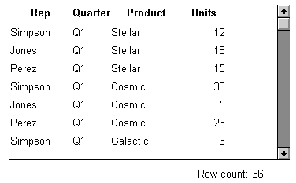
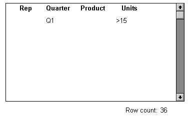
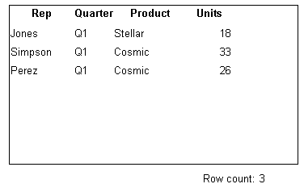
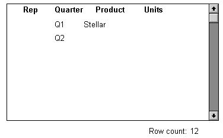

When you call the Retrieve method for a DataWindow control, the rows specified in the DataWindow object's SELECT statement are retrieved. You can give users the ability to further specify which rows are retrieved during execution by putting the DataWindow into query mode. To do that, you use the Modify method or a property expression (the examples here use Modify).
 Limitations You cannot use query mode in a DataWindow object that contains
the UNION keyword or nested SELECT statements.
Limitations You cannot use query mode in a DataWindow object that contains
the UNION keyword or nested SELECT statements.
Once the DataWindow is in query mode, users can specify selection criteria using query by example—just as you do when you use Quick Select to define a data source. When criteria have been defined, they are added to the WHERE clause of the SELECT statement the next time data is retrieved.
The following three figures show what happens when query mode is used.
First, data is retrieved into the DataWindow. There are 36 rows:

Next, query mode is turned on. The retrieved data disappears and users are presented with empty rows where they can specify selection criteria. Here the user wants to retrieve rows where Quarter = Q1 and Units > 15:

Next, Retrieve is called and query mode is turned off. The DataWindow control adds the criteria to the SELECT statement, retrieves the three rows that meet the criteria, and displays them to the user:

You can turn query mode back on, allow the user to revise the selection criteria, and retrieve again.
 To provide query mode to users during execution:
To provide query mode to users during execution:
Turn query mode on by coding.
In PowerBuilder:
dw_1.Modify("datawindow.querymode=yes")In JavaScript:
dw_1.Modify("datawindow.querymode=yes");All data displayed in the DataWindow is blanked out, though it is still in the DataWindow control's Primary buffer, and the user can enter selection criteria where the data had been.
The user specifies selection criteria in the DataWindow, just as you do when using Quick Select to define a DataWindow object's data source.
Criteria entered in one row are ANDed together; criteria in different rows are ORed. Valid operators are =, <>, <, >, <=, >=, LIKE, IN, AND, and OR.
For more information about Quick Select, see the PowerBuilder User's Guide .
Call AcceptText and Retrieve, then turn off query mode to display the newly retrieved rows.
In PowerBuilder:
dw_1.AcceptText()
dw_1.Modify("datawindow.querymode=no")dw_1.Retrieve()
In JavaScript:
dw_1.AcceptText();
dw_1.Modify("datawindow.querymode=no");dw_1.Retrieve();
The DataWindow control adds the newly defined selection criteria to the WHERE clause of the SELECT statement, then retrieves and displays the specified rows.
 Revised SELECT statement You can look at the revised SELECT statement that is sent
to the DBMS when data is retrieved with criteria. To do so, look
at the sqlsyntax argument in the SQLPreview event of the DataWindow
control.
Revised SELECT statement You can look at the revised SELECT statement that is sent
to the DBMS when data is retrieved with criteria. To do so, look
at the sqlsyntax argument in the SQLPreview event of the DataWindow
control.
Criteria specified by the user are added to the SELECT statement that originally defined the DataWindow object.
For example, if the original SELECT statement was:
SELECT printer.rep, printer.quarter, printer.product, printer.units
FROM printer
WHERE printer.units < 70
and the following criteria are specified:

the new SELECT statement is:
SELECT printer.rep, printer.quarter, printer.product, printer.units
FROM printer
WHERE printer.units < 70
AND (printer.quarter = 'Q1'
AND printer.product = 'Stellar'
OR printer.quarter = 'Q2')
To clear the selection criteria, Use the QueryClear property.
In PowerBuilder:
dw_1.Modify("datawindow.queryclear=yes")
In JavaScript:
dw_1.Modify("datawindow.queryclear=yes");
You can allow users to sort rows in a DataWindow while specifying criteria in query mode using the QuerySort property. The following statement makes the first row in the DataWindow dedicated to sort criteria (just as in Quick Select in the DataWindow wizard).
In PowerBuilder:
dw_1.Modify("datawindow.querysort=yes")
In JavaScript:
dw_1.Modify("datawindow.querysort=yes");
By default, query mode uses edit styles and other definitions of the column (such as the number of allowable characters). If you want to override these properties during query mode and provide a standard edit control for the column, use the Criteria.Override_Edit property for each column.
In PowerBuilder:
dw_1.Modify("mycolumn.criteria.override_edit=yes")
In JavaScript:
dw_1.Modify("mycolumn.criteria.override_edit=yes");
You can also specify this in the DataWindow painter by checking Override Edit on the General property page for the column. With properties overridden for criteria, users can specify any number of characters in a cell (they are not constrained by the number of characters allowed in the column in the database).
You can force users to specify criteria for a column during query mode by coding the following:
In PowerBuilder:
dw_1.Modify("mycolumn.criteria.required=yes")
In JavaScript:
dw_1.Modify("mycolumn.criteria.required=yes");
You can also specify this in the DataWindow painter by checking Equality Required on the General property page for the column. Doing this ensures that the user specifies criteria for the column and that the criteria for the column use = rather than other operators, such as < or >=.